Trainees Edition
Trainers Edition
Trainees Edition
Trainers Edition
13. nodarbība: Uzticami informācijas avoti
Nodarbības apraksts
Nodarbības galvenais mērķis ir iepazīstināt studentus ar uzticamiem informācijas avotiem, lai palīdzētu atpazīt un atšķirt dažādus informācijas avotus un to veidus. Nodarbības sekundārais mērķis ir sniegt atbalstu pasniedzējiem, kuri vēlas izmantot nodarbības saturu, lai mācītu savus studentus.
Atbilstoši šiem mērķiem, nodarbībā ietvertas informācijas avotu un to veidu definīcijas, informācijas avotu piemēri par ziņām un žurnālistiku, kā arī norādījumi par to, kā mācīt šo priekšmetu.
Studenti, sekmīgi pabeidzot šo nodarbību, spēs:
- identificēt un atšķirt dažādus informācijas avotu veidus (piemēram, primāros, sekundāros un terciāros avotus);
- identificēt un atšķirt dažādus informācijas avotus (piemēram, uzziņu literatūra, grāmatas, seriālizdevumi, datubāzes);
- pārzināt dažus ar ziņām un žurnālistiku saistītu informācijas avotu piemērus.
Pēc nodarbības pabeigšanas pasniedzēji gūs izpratni par priekšmeta mācīšanas vadlīnijām.
Nodarbības struktūra
Šī nodaļa sastāv no sekojošām daļām:
- Nodarbības apraksts (Mērķis, saturs un mācību rezultāti);
- Nodarbības struktūra;
- Vadlīnijas studentiem;
- Vadlīnijas pasniedzējiem (kā sagatavoties; izmantojamās metodes; padomi);
- Saturs (mācību materiāli un vingrinājumi);
- Tests;
- Resursi (izmantotie un ieteicamie avoti).
Nodarbības galvenie uzdevumi, satura izklāsts un mācību rezultāti, ir izskaidroti Nodarbības aprakstā. Saturs ietver visus mācību materiālus un ar to saistītos uzdevumus. Tests sastāv no jautājumiem ar vairākiem atbilžu variantiem, kas palīdzēs studentiem novērtēt savu progresu. Resursi sastāv no izmantotajiem avotiem un ieteicamajiem avotiem tālākai pētniecībai. Izmantoto avotu sarakstā pieejami resursi, kas izmantoti mācību materiāla sagatavošanā. Ieteicamo avotu sarakstā pieejama papildu literatūra, kuru ieteicams izlasīt. Vadlīnijas studentiem ietver norādījums un ieteikumus apmācāmajiem. Vadlīnijas pasniedzējiem palīdzēs dažādos mācību posmos, sniedzot noderīgus padomus un ieteikumus, kā izmantot šo nodarbību saturu mācību procesā.
Vadlīnijas studentiem
Studentiem ir jāizlasa teksts un jāizpilda uzdevumi. Lai uzzinātu vairāk par tematu, vēlams ieskatīties ieteikto avotu sarakstā. Pēc iepazīšanās ar nodarbības saturu, ieteicams aizpildīt testu, lai novērtētu savu progresu.
Vadlīnijas pasniedzējiem
Pasniedzēju vadlīnijas ietver ieteikumus un padomus par to, kā izmantot nodarbības saturu, lai apmācītu audzēkņus par uzticamas informācijas avotiem. Ja nepieciešams, pasniedzēji var pārskatīt mācību materiālu.
Sagatavošanās
Ieteicams sagatavot prezentāciju (PowePoint/Prezi/Canva), kas papildināta ar vizuāliem materiāliem. Tāpat ieteicams avotu piemērus (piem., Data Turkey, Leta, LURSOFT “Laikrakstu bibliotēka”), kā arī uzdevumus pielāgot konkrētai mērķa grupai. Tas palīdzēs noturēt studentu uzmanību. Mācību nodarbībā ļoti ieteicams izmantot dažādus reālā laika avotus.
Darba uzsākšana
Lai panāktu lielāku studentu iesaisti, sākumā var noderēt īss tests (3-5 jautājumi), izmantojot Kahoot vai Mentimeter rīkus. Jautājumi var kalpot gan kā motivējošs instruments, gan kā rīks, ar kura palīdzību iespējams apzināt studentu esošās zināšanas un izpratni par nodarbības tēmu.
-
Daži jautājumu piemēri:
- Kas ir primārais avots?
- Vai varat nosaukt kādu uzziņu avota piemēru?
- Kas ir datubāzes?
- Vai, izmantojot vienu informācijas avotu, iespējams piekļūt pasaules svarīgākajam ziņu saturam, kas apkopots no vairākiem vadošiem avotiem?
Izmantojamās metodes
Mācību procesā var tikt izmantotas dažādas metodes, piemēram:
- Lekcija
- Darbs grupās
- Individuālais darbs
- Pašrefleksija
Padomi pasniedzējiem
Iesildīšanās
Lai efektīvi iesaistītu dalībniekus mācību procesā un vienotos par to, kas tiks apgūts nodarbības laikā, tās sākumā var uzdot iesildošus jautājumus par tēmu. Piemēram, studentiem var uzdot jautājumus: Kas ir sekundārais avots? Kur var atrasts vēsturiskus laikrakstus? Kāda atšķirība ir starp tīmekļa avotiem un datubāzēm?
-
Aktivitātes soļi:
- sagatavot uzdevumus tēmu meklēšanā, izmantojot dažāda veida avotus (piemēram, uzziņu avoti, datubāzes, grāmatas, seriālizdevumi, standarti);
- lūgt dalībniekus izvēlēties piemērotus un uzticamus avotus par konkrētajām tēmām;
- lūgt dalībniekus dalīties un izskaidrot izvēlēto avotu izvēli;
- aicināt dalībniekus izmantot pašu izvēlētos avotus, lai atbildētu uz pētījuma jautājumiem;
- pajautāt dalībniekiem, vai viņi ir apmierināti ar rezultātiem;
- pajautāt dalībniekiem, vai, viņuprāt, šie rezultāti ir ticami.
Pēc aktivitātes pārliecinieties, vai dalībnieki spēj saprast, ka ir daudz dažādu avotu, ka dažāda veida avoti attiecas uz dažāda veida informāciju un ka ne visi avoti ir uzticami.
Nodarbības mērķa paskaidrošana
Skaidri jānorāda nodarbības mērķis (šajā gadījumā – iepazīstināt ar uzticamiem informācijas avotiem un to veidiem). Pēc iesildīšanās jautājumiem būs vieglāk noskaidrot mācību mērķus.
Nodarbības satura izklāsts
Prezentējot nodarbības saturu, pārliecinieties, ka mijiedarbojieties ar studentiem un iedrošiniet viņus aktīvi iesaistīties.
Pirms nodarbības
- Pirms nodarbības sagatavojiet jautājumus, kas dalībniekiem ļautu praktizēties, izmantojot dažādus avotus (sagatavojiet jautājumus un nosakiet atbilstošākos avotus).
- Pirms nodarbības izlemiet, kuri avoti tiks izmantoti praksē.
Nodarbības laikā
-
Pirms nodarbības sākuma pajautājiet dalībniekiem:
- Kas ir uzticama informācija?
- Kāpēc uzticami informācijas avoti ir svarīgi?
- Ko viņi zina par informācijas avotu veidiem?
- Kādas varētu būt uzticamu avotu neizmantošanas sekas?
- Kādi ir piemērotākie un uzticamākie avoti, ko izmantot, lai atbildētu uz praksē iekļautajiem jautājumiem?
Iepazīstinot ar informācijas avotu veidiem:
- lūdziet dalībniekus sniegt informācijas vajadzības piemērus, kurus mēs varam attiecināt uz šiem avotiem.
- sniedziet komentārus par viņu piemēriem.
Pēc nodarbības
- Vēlreiz uzsveriet nepieciešamību izmantot uzticamus avotus informācijas iegūšanai un izvērtēšanai.
- Pārliecinieties, ka dalībnieki saprot, ka pastāv dažādi uzticamas informācijas avoti, un tas viss prasa izvērtēšanu.
- Nodrošiniet dalībniekiem jaunas meklēšanas tēmas, kuras pētīt, izmantojot avotus, kas izskaidroti šajā nodarbībā.
Ieteikumi
- Nodarbībā izmantojiet praktiskus piemērus un uzdevumus.
- Izvēlieties atbilstošus avotu piemērus (konkrētai valstij, mērķa grupai).
- Izvēloties piemērus, pārliecinieties, ka tie atbilst definīcijām un avotu veidiem. Noteikt to, vai avots ir primārais, sekundārais vai terciārais, var būt sarežģīti.
Noslēgums
Sagatavojiet īsu nodarbības kopsavilkumu un, lai uzsvērtu būtiskākās lietas, uzdodiet studentiem jautājumus, kā piemēram:
- Kāpēc ir svarīgi zināt dažāda veida avotus?
- Kas notiks, ja neizmantosim “uzticamus” avotus?
- Vai par katru tēmu dalībnieki varēja atrast atbildes internetā?
“Pēcpatiesības laikmetā” dažādu uzticamu avotu pārzināšana ļaus dalībniekiem apmierināt informācijas vajadzības un pasargāt sevi no maldināšanas, ko izraisa viltus ziņas.
Saturs: uzticami informācijas avoti
Ievads
Mūsdienās informācijas un komunikācijas tehnoloģiju attīstības rezultātā strauji pieaugošais informācijas apjoms un ar to saistīto avotu dažādība ir kļuvusi par vienu no lielākajām problēmām saistībā ar piekļuvi precīzai un uzticamai informācijai. Mūsdienu informācijas ekosistēmā ir ļoti svarīgi, lai tie, kas veido vai veicina satura veidošanu (piemēram, autors, redaktors, izdevējs), būtu autoritātes šajā jomā un, lai sniegtā informācija būtu pareiza, objektīva un pilnīga, citiem vārdiem sakot, uzticama.
Informācija tiek veidota un publicēta galvenokārt elektroniskajos plašsaziņas līdzekļos. Ikviens var ātri izveidot un koplietot saturu. Piekļūt šim saturam ir ļoti vienkārši, izmantojot tīklu. Šo iemeslu dēļ piekļuve uzticamiem avotiem ir ļoti svarīga. Palielinoties resursu skaitam un saturam, kļūst arvien grūtāk atlasīt un novērtēt precīzu informāciju. Dažādi jēdzieni, kas ienāk mūsu dzīve, kā piemēram, nepatiesa informācija, dezinformācija, misinformācija, viltus ziņas un informācijas piesārņojums, arī ir esošās informācijas ekosistēmas rezultāts.
Mūsdienās varam teikt, ka personas informācijas meklēšanas uzvedība parasti izpaužas kā meklēšana tīmeklī. Šajos tīklos nav viegli atrast uzticamu informāciju vai atlasīt uzticamu informāciju no pieejamiem avotiem. Informācijas avotu izvēlei ir liela nozīme, lai efektīvi un lietderīgi apmierinātu informācijas pieprasītāja vajadzības, jo pieejamās informācija derīgums un ticamība ir atkarīga no avota. Tajā pašā laikā avoti, kuros tiek meklēts, mainās atbilstoši nepieciešamai informācijai. Piemēram, noderīgāki būs vispārīgi informācijas avoti; tomēr, ja mums nepieciešama detalizētāka vai specializēta informācija, noderīgāki var būt avoti, kas attiecas uz konkrēto tēmu. Šī iemesla dēļ ir ļoti svarīgi izprast dažādu veidu avotus.
Informācijas avotus iespējams klasificēt dažādos veidos: pamatojoties uz to piekļuves īpašībām (primārs vai sekundārs), satura (zinātnisks vai populārs), plašsaziņas līdzekļiem (drukāts vai nedrukāts), publikāciju formāta (periodisks vai vienreizējs), izdevējiem (valdības publikācijas, korporatīvās, tirdzniecības publikācijas, pelēkā literatūra), laika perioda (pašreizējais vai vēsturiskais), utt.
Šajā sadaļā tiks izskaidroti dažādi informācijas avotu veidi, kā arī sniegti piemēri.
Informācijas avotu veidi
Informācijas avotu attīstība un formu daudzveidošanās vērojama no senatnes līdz mūsdienām. Atbilstoši dažādiem informācijas satura apstrādes veidiem, var izdalīt primāros, sekundāros un terciāros informācijas avotus. Dažkārt informācijas avoti tiek iedalīti tikai primārajos un sekundārajos avotos.
Primārie informācijas avoti
“Primārie avoti ir materiāli dažādos formātos, kas radīti pētījuma izstrādes laikā un kalpo kā oriģināls pierādījums, dokumentējot laika periodu, notikumu, cilvēkus, ideju vai darbu. Primārie avoti var būt drukāti materiāli (piemēram, grāmatas un efemēras), manuskriptu/arhīvu materiāli (piemēram, dienasgrāmatas vai virsgrāmatas), audio/vizuālie materiāli (piemēram, ieraksti vai filmas), artefakti (piemēram, drēbes vai personīgās mantas) vai digitāli radīti materiāli (piemēram, e-pasti vai digitālās fotogrāfijas)” (ACRL RBMS-SAA, 2018, 11.–12. lpp.).
Primāro informācijas avotu piemēri ir: akadēmiskie žurnāli, arhīva materiāli, grāmatas, konferenču materiāli, disertācijas un tēzes, valdības dokumenti, patentu specifikācijas, produktu paraugi, zinātnes un tehnoloģiju ziņojumi, tehnoloģiju standarti, utt.
Primārie avoti, kas satur oriģinālu informāciju, ir svarīgi pētniekiem. Tie ir arī disciplīnas izaugsmes vai attīstības rādītāji. Primāro avotu izmantošana var nebūt vienkārša, jo avota formāts var būt unikāls un lietotājam nepazīstams (ACRL RBMS-SAA, 2018). Izmantojot primāros avotus, sekundārie avoti (avoti, kas komentē primāros un/vai citus sekundāros avotus) (ACRL RBMS-SAA, 2018, 13. lpp.) var palīdzēt.
Sekundārie informācijas avoti
Sekundārie informācijas avoti atšķiras no primārajiem avotiem, atspoguļojot jaunāko primārajos avotos sniegto informāciju caur kritiku, komentāriem un analīzi (ACRL RBMS-SAA, 2018, p. 13).
Sekundārie informācijas avoti:
- apraksta, izskaidro, analizē vai novērtē primārajos avotos sniegto informāciju,
- iztirzā vai kritizē primārajos informācijas avotos sniegtos pierādījumus, pamatojumus vai cēloņus,
- pārveido primāro avotu saturu atbilstoši izmantošanas vajadzībām (Chatterjee, 2017, 11. lpp.).
Sekundāro informācijas avotu piemēri ir: kopsavilkumi, bibliogrāfijas, katalogi, ceļveži, rādītāji, pārskata raksti, u.c.
Terciārie informācijas avoti
Terciārie informācijas avoti ir balstīti uz primārajiem un sekundārajiem informācijas avotiem. Tie sastāv no pētījumu rezultātiem, kas iegūti, veicot visaptverošu primāro un sekundāro avotu analīzi un sintēzi. Terciāro informācijas avotu piemēri ir: komentāri, ceļveži, rokasgrāmatas, ziņojumi, pārskati un konkrētu tematu kopsavilkumi vai mērķu apkopojumi (Li, 2014).
Informācijas avoti
Informācijas avoti var būt dažādi. Informācijas avotu izpētes apjoms un dziļums ir atkarīgs no konkrētā avota. Liela apjoma avotam tēmu tvērums ir plašs, savukārt neliela apjoma avoti var aptvert tikai vienu konkrētu tēmas aspektu. (Lanning, 2012, p. 13). Dažāda apjoma un izpētes dziļuma zinātniskie informācijas avoti ir:
Uzziņu avoti
Šie avoti “ir izstrādāti, lai sniegtu jums ātrus faktus vai īsu pārskatu par tēmu”, tie var sniegt pamata izpratni par tēmu un tādējādi var būt ļoti noderīgi pētniecībā. Labākai izpratnei sākumā var palīdzēt tieši uzziņu avoti. Uzziņu avoti ir vienmēr sekundārie informācijas avoti. Tie var ietvert populāru vai zinātnisku informāciju, pašreizējo vai vēsturisko informāciju, un tos parasti raksta vai rediģēja vairāk nekā viena persona. To apjoms ir ļoti plašs, un to izveide prasa ilgāku laiku nekā cita veida avotiem (Lanning, 2012, 14. lpp.).
Alamanahs
Almanahs ir “ikgadējs noderīgu datu un statistikas apkopojums par valstīm, personībām, notikumiem, tēmām utt.”. (Welsh & Wright, 2010, 41. lpp.).
Piemērs: World Almanac and Book of Facts
|
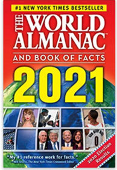 |
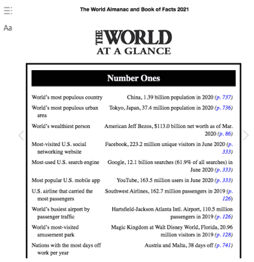 |
Avots: www.amazon.com
Bibliogrāfija
Bibliogrāfija ir "darbu, dokumentu un/vai bibliogrāfisku vienību saraksts, parasti ar zināmām saistībām starp tiem (piemēram, bibliogrāfija var aptvert viena autora darbus, avotu sarakstu par noteiktu tēmu, viena izdevēja iespiestos izdevumus vai vienā vietā iznākušos avotus). Tā atšķiras no kataloga ar to, ka tās saturs nav ierobežots ar vienas kolekcijas, bibliotēkas vai bibliotēku krājumiem” (Levine-Clark & Carter, 2013, 29.lpp.). Bibliogrāfija palīdz lietotājiem identificēt, atrast vai atlasīt materiālu.
Biogrāfija
Biogrāfija ietver informāciju par cilvēka dzīvi. Šī informācija var attiekties uz jebko, piemēram, dzimšanu, izglītību vai karjeru (Markey, 2019, 75.–76. lpp.).
Piemērs: Marquis Who’s Who
Vārdnīcas
Valodas vārdnīca ir akronīmu, īpašvārdu, frāžu vai vārdu sakopojums noteiktā kārtībā, kas sniedz vārdu definīcijas, izcelsmi, tulkojumu citās valodās, gramatiskās formas, pareizrakstību, izrunu, sinonīmus, lietojumu, vizuālos attēlus un/vai rakstītās formas” (Markey, 2019, 372. lpp.). Uz disciplīnām balstīta vārdnīca ir “jēdzienu, notikumu, objektu un visaptverošu tēmu sakopojums noteiktā disciplīnā, priekšmetā vai studiju jomā ar ietvertām definīcijām un īsiem skaidrojumiem” (Markey, 2019, 368. lpp.). Dažkārt šādas vārdnīcas tiek sauktas par enciklopēdijām vai uzziņu rokasgrāmatām (Markey, 2019, 78. lpp.).
Piemērs: The New Shorter Oxford English Dictionary
HA! Designs - Artbyheather "Vintage German Dictionary Page" ir licencēts atbilstoši CC BY-NC-ND 2.0. |
warwick_carter "The New Shorter Oxford English Dictionary; The New Oxford Thesaurus of English; The Macquarie Dictionary" ir licencēts atbilstoši CC BY-NC 2.0. |
Direktoriji
Ietver kontaktinformāciju par cilvēkiem un organizācijām. Tajās atrodama arī cita informācija, piemēram, personu vecums, nodarbošanās un organizācijas dibināšanas datums, organizācijas darbinieku vai kontaktpersonu skaits (Markey, 2019, 368.lpp.).
Piemēri: Foundations Directory, Europa World of Learning
Enciklopēdijas
Enciklopēdijas satur rakstus par dažādām tēmām nozarē vai priekšmetos. Šie raksti jeb šķirkļi sniedz pamatinformāciju, definīcijas, skaidrojumus par saistītām tēmām ar atsauču sarakstu turpmākai lasīšanai (Welsh & Wright, 2010, 43. lpp., Markey, 2019, 80.lpp.). Tie nodrošina informāciju par tēmas vai koncepcijas galvenajiem aspektiem.
Piemērs: Encyclopaedia Britannica
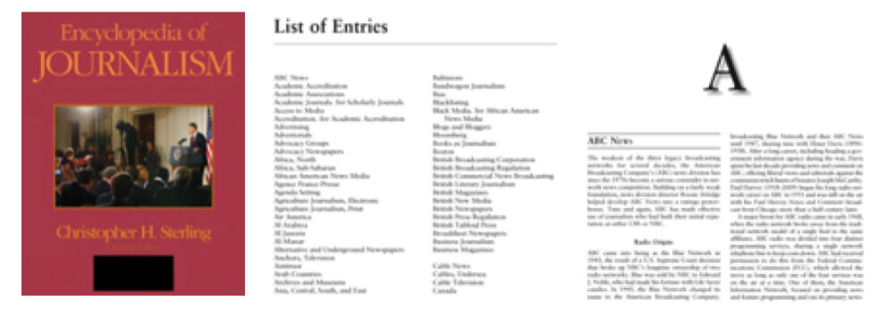
Avots: Sage Publication
Rokasgrāmatas
Rokasgrāmatās ir iekļauta kritiska informācija, kas sakārtota, lai ātri atrastu faktus, kas varētu būt noderīgi konkrētai jomai (Levine-Clark & Carter, 2013, 124.lpp.).
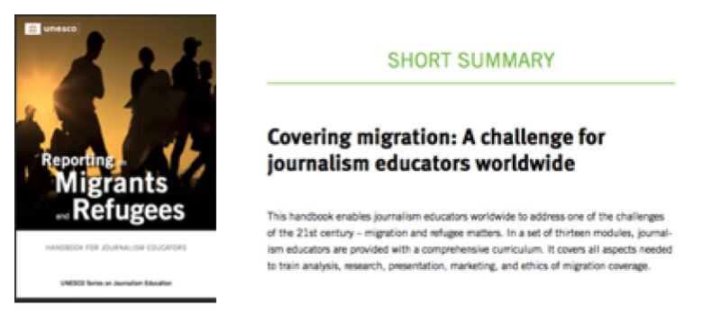
Gadagrāmatas
Gadagrāmatas ir ikgadējs izdevums, kas sniedz īsu, aktuālu informāciju par valsti, organizāciju, disciplīnu vai priekšmetu.
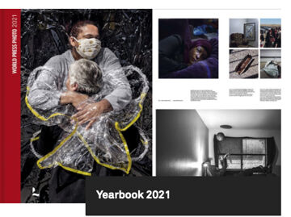
Grāmatas
Grāmatām, atšķirībā no uzziņu avotiem, ir lielāks dziļums un šaurāks apjoms. Grāmatas sniedz detalizētu ieskatu tēmā. Grāmatas var būt primārie vai sekundārie, populārie vai zinātniskie, vēsturiskie vai aktuālie informācijas avoti. Var izdalīt mācību grāmatas un monogrāfijas. Mācību grāmatas sniedz mācību priekšmeta pamatprincipus tādā valodā un formā, kas ir piemērota un atbilstoša izglītojamo izglītības līmenim. Mācību grāmatas parasti satur plašākai sabiedrībai noderīgu informāciju. Tajās nav atrodamas jaunas autoru teorijas (Chatterjee, 2017, 18.lpp.). Monogrāfija ir “sistemātisks un pilnīgs traktāts par konkrētu tēmu” (Levine-Clark & Carter, 2013, 169.lpp.). Monogrāfijas sniedz sīkāku informāciju, tostarp padziļinātu informāciju, diskusijas un detalizētu skaidrojumu par vienu tēmu.
Seriālizdevumi
Publikācija jebkurā plašsaziņas līdzeklī, kas izdota numurētā vai hronoloģiskā sējuma secībā un kuru paredzēts turpināt izdot uz nenoteiktu laiku. Sēriālizdevumi ir periodiskie izdevumi, avīzes un gada izdevumi (pārskati, gadagrāmatas utt.), žurnāli, memuāri, protokoli, darījumi utt.; un numurētas monogrāfiskas sērijas (Levine-Clark & Carter, 2013, 229.lpp.).
Zinātniski žurnāli
Periodiski izdevumi, jo īpaši tādi, kas satur zinātniskus rakstus un/vai izplata aktuālu informāciju par pētniecību un attīstību noteiktā tēmā (Levine-Clark & Carter, 2013, 144.lpp.).
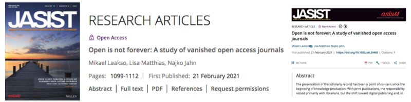
Žurnāli
Periodisks izdevums vispārējai lasīšanai, kurā ir dažādu autoru raksti par dažādām tēmām (Levine-Clark & Carter, 2013, 160. lpp.). Žurnāli parasti tiek izdoti noteiktai auditorijai. Tie nav rakstīti akadēmiskā stilā, un tajos parasti nav zinātnisku rakstu (Lanning, 2012, 16. lpp.).
Piemērs: New Republic, Washington Monthly, New Scientist (The New Scientist aptver iknedēļas jaunākos sasniegumus starptautiskajā zinātnē un tehnoloģijā vispārējai, angliski runājošai auditorijai, kā arī iekļauj darba piedāvājumus attiecīgajās jomās).
Biļeteni
Periodiski izdevumi, kas sastāv no vienas vai vairākām lapām ar kādas iestādes vai organizācijas jaunākajā ziņām un aktuālo informāciju (Levine-Clark & Carter, 2013, p.174).
Piemērs: WHO Newsletter.
Laikraksti
Laikraksts ir regulāri (parasti katru dienu, katru nedēļu utt.) publicēts izdevums, kas atspoguļo ziņas, viedokļus, sludinājumus un citu aktuālu, bieži vien vietējās intereses, informāciju. Parasti tie koncentrējas uz plašai sabiedrībai aktuāliem notikumiem. Raksti un ziņojumi parasti ir īsi. Bet tie ir noderīgi, meklējot informāciju par politiku, uzņēmējdarbību, aktualitātēm, ekonomikas statistiku, starptautiskajām lietām, ziņu reportāžām, tehnoloģiju progresu, utt. Laikraksti ir masu mediji, kas vada un ietekmē sabiedrisko domu mūsdienu informācijas sabiedrībā (Li, 2014, 107.lpp.; Lanning, 2012).
Datubāzes
Datubāze ir veids, kā elektroniski strukturēt, uzglabāt un ātri piekļūt lielam informācijas apjomam. Galvenās datubāzes funkcijas ir: struktūra (organizēts informācijas glabāšanas veids), efektivitāte (bez dublēšanās) un ātra piekļuve (spēja pēc iespējas ātrāk meklēt un izgūt materiālus no datubāzes) (Bell, 2015, 1.lpp.). Datubāzu mērķi var atšķirties, piemēram, piekļuve jebkuras nozares publicētai literatūrai; piekļuve pilnam enciklopēdiskās literatūras klāstam dažādās disciplīnās, vai piekļuve noteiktam žanram vai formai, piemēram, žurnālu rakstiem, disertācijām, valdības publikācijām vai laikrakstiem (Markey, 2019, 64. lpp.).
Datubāzes var klasificēt dažādos veidos: pēc avota veida (faktiskais avots vai surogāts); pēc žanra (teksts, mediji, skaitliskie un telpiskie dati vai to kombinācija); pēc atlases principa (formai specifisks saturs, mācību priekšmetam specifisks saturs vai enciklopēdisks saturs); pēc datubāzu veida (citēšanas informācijas datubāze, pētījumu datubāze); vai pēc redakcionālās kontroles utt. (Markey, 2019, 65.lpp.).
Bibliogrāfiskās datubāzes nesatur faktiskos avotus, bet ietver faktisko avotu kopsavilkuma versijas. Bibliogrāfisko datubāzu ieraksti sniedz konkrēta dokumenta aprakstu, ko parasti var izgūt pēc autora, nosaukuma, tēmas virsraksta (deskriptora) vai atslēgvārda(-iem); un parasti satur citātus un dokumentu kopsavilkumus (Welsh & Wright, 2010, 71.lpp.).
Library, Information Science & Technology Abstracts ir bibliogrāfiskās datubāzes piemērs. Tajā indeksēti un pieejami abstrakti vairākiem simtiem žurnālu, kā arī grāmatām, pētījumu pārskatiem un ziņojumiem.
Pilnteksta datubāzes nodrošina piekļuvi dokumentu pilnajiem tekstiem dažādos formātos, piemēram, HTML, PDF.
Newspaper Source Plus ir pilnteksta datubāzes piemērs. Tā sniedz piekļuvi miljoniem rakstu no starptautiskiem laikrakstiem, ziņu kanāliem un žurnāliem. Datubāze piedāvā televīzijas un radio atšifrējumus, kā arī nepārtrauktus informācijas atjauninājumus no populāriem ziņu avotiem (EBSCO, 2021a).
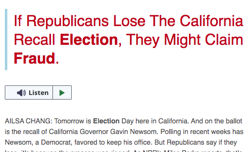
Avots: EBSCO, 2021
Bibliogrāfiskās un citēšanās informācijas datubāzes satur informāciju par publikācijām nozīmīgākajos zinātniskajos žurnālos un to citēšanu.
Web of Science and Scopus ir šādu datubāzu piemēri.
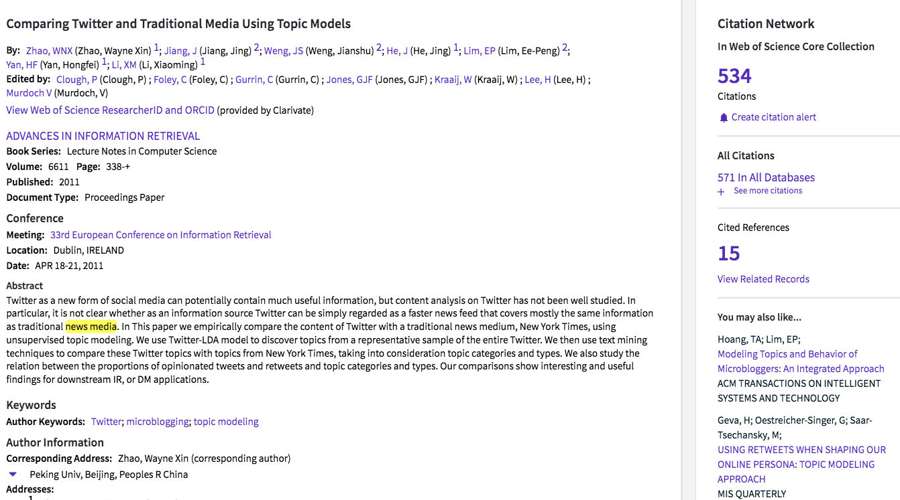
Avots: WOS, 2021
Statistikas datubāzes nodrošina materiālus, kā piemēram, neapstrādātu datu kopas, pētījumu ziņojumus, akciju tirgus kotācijas, statistiku un gada pārskatus. Šāda veida datubāzes var būt noderīgas ekonomikas prognozēšanai vai tirgus izpētei (Fulton & McGuinness, 2016, 126.lpp.). Data Turkey ir šāda veida datubāzes piemērs. Datubāze nodrošina piekļuvi ekonomiskajiem, sociālajiem, nozaru un reģionālajiem datiem, ko sagatavojušas valsts iestādes un privātās organizācijas Turcijā.
Datubāzes salīdzinājumā ar tīmekli
Fulton & McGuinness (2016, 127.-128. lpp.) veica datubāzu un tīmekļa avotu salīdzinājumu, pamatojoties uz šādām tēmām:
Uzticamība: Datubāzēs galvenokārt atrodami autoritatīvi, zinātniski materiāli, kurus atlasījuši un recenzējuši profesionāļi. Savukārt, tīmekļa avoti nodrošina piekļuvi informācijai/dokumentiem, no kuriem daudzi nav pārbaudīti, vai tos nav rakstījuši kvalificēti speciālisti, vai arī viņiem nav pietiekamas zināšanas par saistītām tēmām.
Satura organizēšana: Datubāzu saturs ir labi sakārtots, un tajā tiek izmantoti standartizēti priekšmetu virsraksti, deskriptori un citi lauki, piemēram, atslēgvārdi, publikācijas nosaukums, utt. Meklēšanas rezultāti ir daudz efektīvāki un precīzāki. Avoti tīmeklī nav sakārtoti tā, kā tas ir datubāzēs; tāpēc nav viegli piekļūt visiem atbilstošajiem dokumentiem.
Meklēšanas iespējas: Datubāzes piedāvā dažādas meklēšanas opcijas, piemēram, vienkāršā, paplašinātā vai padziļinātā meklēšana, kā arī citas funkcijas, piemēram, meklēšanas rezultātu saglabāšana un eksportēšana. Tīmeklī meklēšanas funkcijas ir atkarīgas no meklētājprogrammas. Var būt gan vienkāršā, gan paplašinātā meklēšana. Parasti tīmekļa meklētājprogrammām trūkst zinātnisko datubāzu sarežģītības un elastības.
Aptvērums: datubāzes nodrošina padziļinātu un plašu tēmu pārklājumu. Slēptā jeb dziļā tīmekļa dēļ padziļinātu informāciju tīmeklī par zinātniskām tēmām atrast ir problemātiski.
Atbilstība: datubāzu piedāvātā specifiskā satura un meklēšanas funkciju dēļ ir iespējams izgūt atbilstošos dokumentus. Tīmeklī rezultāti tiek sarindoti pēc meklētājprogrammas algoritmiem. Meklēšanas rezultātu filtrēšana, lai identificētu visatbilstošākos dokumentus, var būt izaicinājums tīmeklī.
Informācijas aktualitāte: Datubāzes tiek regulāri atjauninātas (piemēram, katru dienu, katru nedēļu), un tajās tiek pievienoti jauni dokumenti. Tīmeklim regulāru atjauninājumu nav.
Konferenču materiāli
Konferenču materiāli tiek prezentēti konferencēs, semināros, simpozijos, u.c. Dažkārt šie materiāli tiek publicēti kā atsevišķa publikācija vai žurnāla speciālizdevums. Šie materiāli ir svarīgi, lai informētu par jaunākajiem sasniegumiem un pētniecības progresu dažādās akadēmiskajās disciplīnās.
Piemēri: Proceedings of ISSI 2015 Istanbul: 15th International Society of Scientometrics and Informetrics Conference, Istanbul, Turkey, 29 June to 4 July, 2015
Disertācijas un maģistra darbi
Disertācijas un maģistra darbi ir formāli, akadēmiski pētnieciski darbi, kas tiek izstrādāti zinātniskā grāda ieguvei. Disertācijas iesniedz doktoranti, bet maģistra darbus - maģistranti. (Li, 2014, 105.lpp.). Disertācijas un maģistra darbi ir galvenie primārās pētniecības rezultātu avoti.
Patentu literatūra
“Patents ir dokuments, kas apliecina izgudrotāja ekskluzīvās tiesības uz savu izgudrojumu. Šis izgudrojums, kas var būt produkts vai process, nodrošina jaunu veidu, kā kaut ko darīt, vai piedāvā jaunu tehniskās problēmas tehnisku risinājumu." (World Intellectual Property Organization [WIPO], 2021). Patentu literatūra ir labi strukturēts tehniskās un citas informācijas avots. Patenti sniedz informāciju, kas parasti nav pieejama žurnālu rakstos vai citos avotos. Patentu literatūrā ir ietverta informācija par jauniem izgudrojumiem, jauniem produktiem/procesiem vai rūpnieciskajiem dizainparaugiem, kuriem ir piešķirti patenti (Chatterjee, 2017, 25.lpp.).
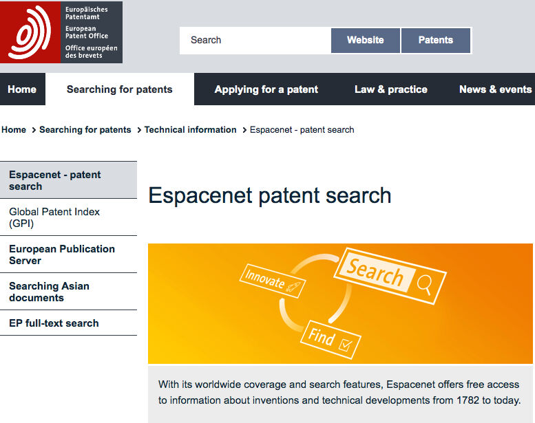
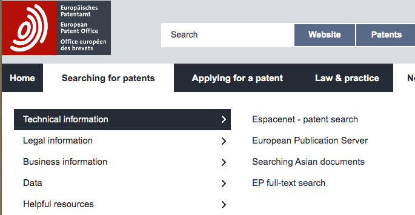
Ziņojumi
Ziņojums ir atsevišķi izdots dokuments par pētījuma rezultātiem, izstrādē esošajiem pētījumiem vai citiem tehniskiem pētījumiem. (Levine-Clark & Carter, 2013, 216.lpp.).
Ir ziņojumi par progresu, kas tiek sagatavoti administratīvu iemeslu dēļ; ir ziņojumi, kas tiek sagatavoti par zinātniskām tēmām, saturot zinātnisku un tehnisku informāciju (Chatterjee, 2017, 22.–23.lpp.). Tehniskajos ziņojumos ir aprakstītas un reģistrētas problēmas, procesi un rezultāti, kas radušies zinātniskās izpētes laikā, piemēram, laboratorijas testos un medicīniskajos pētījumos. Tā kā šie ziņojumi, tāpat kā citi zinātniski un tehniski dokumenti, netiek iepriekš recenzēti, tos uzskata par neoficiālām publikācijām. Taču tie ir nozīmīgi resursi, lai sekotu līdzi aktuālajām pētniecības tendencēm un tehniskajiem jautājumiem dažādās disciplīnās (Li, 2014, 108.lpp.).
Piemēri: Reuters Institūta digitālo ziņu pārskats 2021
2021. gada progresa ziņojums Parlamentam - Klimata pārmaiņu komitejas ziņojums
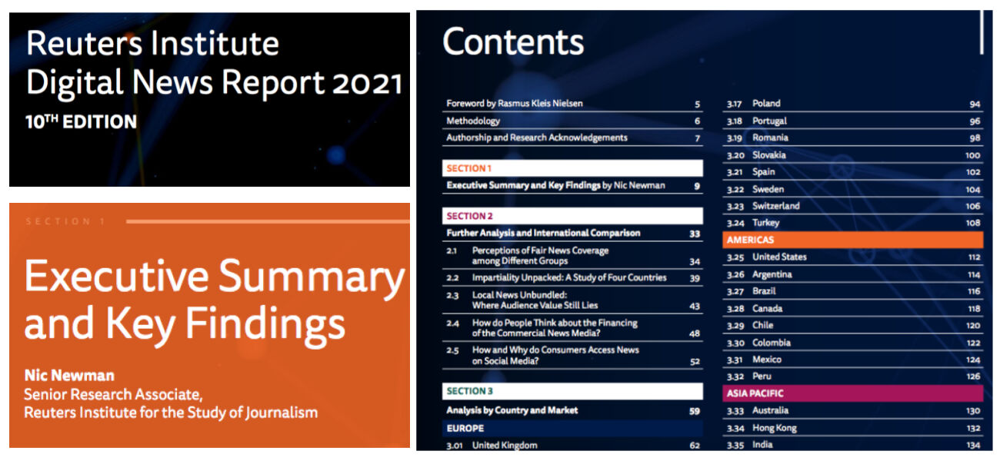
Standarti
Standarti “nodrošina prasības, specifikācijas, vadlīnijas vai raksturlielumus, ko var konsekventi izmantot, lai nodrošinātu materiālu, produktu, procesu un pakalpojumu atbilstību to mērķim” (International Organization for Standardization [ISO] CASCO, 2017, 1.lpp.). Standarts “var būt par produkta izgatavošanu, procesa pārvaldību, pakalpojuma sniegšanu vai materiālu piegādi” (International Organization for Standardization [ISO], 2021a).
Standartus veido gan nacionālās, gan profesionālās organizācijas.
Piemērs: ISO 26000 SOCIAL RESPONSIBILITY: “Standarts sniedz norādes tiem, kas atzīst, ka cieņa pret sabiedrību un vidi ir būtisks veiksmes faktors. ISO 26000 piemērošana ir ne tikai “pareizā lieta” , kuru darīt, bet arvien biežāk tiek uzskatīta par veidu, kā novērtēt organizācijas apņemšanos nodrošināt ilgtspējību un tās vispārējo sniegumu.”(International Organization for Standardization [ISO], 2021b).
Valdības publikācijas
Jebkura publikācija, kuru publicē ar likumīgi organizētas valdības vai starptautiskas organizācijas biroja izdevumiem un pilnvarām. Šādas publikācijas sauc par valdības dokumentiem vai publiskiem dokumentiem (Levine-Clark & Carter, 2013, 120-121.lpp.).
Valdības publikācijas attiecas uz likumiem un noteikumiem, kas aptver tādas jomas kā kultūra, uzņēmējdarbība, diplomātija, ekonomika, valsts aizsardzība, zinātne, tehnoloģijas un tirdzniecība (Li, 2014, 106.lpp.).
Pelēkā literatūra
Literatūra, kas “satur vispārpieejamu informāciju … piemēram, tehniskie ziņojumi, valdības publikācijas un oficiāli ziņojumi” (Levine-Clark & Carter, 2013, 121.lpp.). Šāda veida materiālus var radīt valdība, akadēmiķi, uzņēmēji un rūpniecībā strādājošie, kur izdevējdarbība nav iestādes galvenā darbība (Schöpfel, 2010).
Kā pelēkās literatūras piemērus var norādīt dažāda veida valdības dokumentus, analītiskus apskatus, pārskatus par tehnisku vai zinātnisku pētījumu, kursu un darba materiālus.
Institucionālie repozitoriji
Institucionālais repozitorijs ir pētnieciskas institūcijas (vienas vai vairāku) digitāls arhīvs, kura mērķis ir apkopot un saglabāt intelektuālā darba rezultātus. Repozitorijos glabājas dažāda veida dokumenti, piemēram, postprint un preprint publikācijas, darba dokumenti, disertācijas un promocijas darbi, pētniecības pārskati un tehniskie ziņojumi, konferenču materiāli, departamentu un pētniecības centru informatīvie izdevumi un biļeteni, dokumenti, kas atbalsta grantu pieteikumus, komiteju ziņojumi un memorandi, statistikas ziņojumi, administratīvie dokumenti un aptaujas (Crow, 2002). Parasti institūcijā strādājošie (mācībspēki vai administratīvais personāls) savus dokumentus nodod šajās krātuvēs.
Piemērs: DSpace@MIT
DSpace@MIT ir digitāla krātuve MIT pētījumiem, tostarp recenzētiem rakstiem, tehniskajiem ziņojumiem, darba dokumentiem, bakalaura un maģistra darbiem, u.c.
Informācijas avoti par ziņām un žurnālistikuIepriekšējās sadaļās atrodams vispārīgs ievads par uzticamas informācijas avotiem. Šajā sadaļā tiks prezentēti daži uzticamu ziņu un žurnālistikas avotu piemēri.
Newspaper Source Plus
Laikrakstu, televīzijas un radio ziņu pilnu tekstu datubāze. Vairāk kā 88 miljoni rakstu no vairāk kā 1200 laikrakstiem, 150 ziņu kanāliem un žurnāliem. Datubāzes saturs ik dienu tiek atjaunots no populāru ziņu avotiem.
Datubāze satur tādus avotus kā AP (Associated Press), CNN Wire, PR Wire, UPI (United Press International), Xinhua (Ķīna), kā arī televīzijas un radio ziņu atšifrējumus: ABC News (American), ABC (Australian), CBC (Canadian), CBS News, CNBC, CNN, CNN International, FOX News, MSNBC, National Public Radio, PBS (EBSCO, 2021a).
NewsWires
Datubāze nodrošina nepārtrauktu piekļuvi pasaules mēroga ziņām no Associated Press, United Press International, CNN Wire, and Business Wire. Kolekcijā ietilpst: AP Financial News, AP Top News, AP WorldStream, AP U.S. Politics & Government, AP 50 State Reports, UPI Business, UPI Entertainment, UPI Sports, UPI Top News, u.c. (EBSCO, 2021a).
Regional Business News Plus
Datubāze nodrošina piekļuvi pilna teksta reģionālajām biznesa publikācijām no ASV un Kanādas. Tā ietver jaunākās ziņas no vairāk nekā 920 pilna teksta laikrakstiem un ziņu kanāliem; vairāk nekā 40 pilna teksta brīvpieejas reģionālās biznesa publikācijas; un vairāk nekā 2,2 miljoni pilna teksta TV un radio ziņu atšifrējumus (EBSCO, 2021c)
Web News
EBSCO's Web News provides near real-time access to thousands of top news feeds from around the globe. This collection includes over 14,000 feeds covering a range of business and general news topics (EBSCO, 2021d).
Data Turkey
Datubāze sniedz datus par Turciju dažādās sociālajās jomās: nacionālie konti (piemēram, iekšzemes kopprodukts, vispārējā ekonomikas bilance), ārējā tirdzniecība un maksājumu bilance (piemēram, eksports, imports), cenas, procentu likmes, valūtas kursi (piemēram, nafta un zelta cenas, nekustamā īpašuma cenas), nozaru statistika (piemēram, lauksaimniecība, zinātne un tehnoloģijas), sociālā statistika (piemēram, iedzīvotāji un demogrāfija, izglītība), valsts finanses (piemēram, budžeta konti, naudas plūsma), reģionālā statistika (piemēram, sociālā statistika), arhīvi un garās sērijas (piemēram, cenas, darba tirgus) (dataTurkey, 2021).
HukukTürk - Kazanc? Hukuk - Lexpera
Datubāzes nodrošina pilna teksta piekļuvi Kasācijas instances tiesai, Valsts padomes judikatūrai, Satversmes tiesas judikatūrai, Turcijas tiesu praksei (Eiropas Cilvēktiesību tiesa), Turcijas tiesību aktiem, Turcijas Republikas Oficiālajam Vēstnesim un citai literatūrai, piemēram, grāmatām un rakstiem par tiesībām (HukukTürk, 2021; Kazanc? Hukuk, 2021; Lexpera, 2021).
HeinOnline
HeinOnline piedāvā informācijas meklēšanu vairāk nekā 3000 zinātniskos žurnālos dažādās tēmās.
Tā aptver: ASV federālo saturu (U.S. Congressional Documents, Immigration Law & Policy in the U.S.), ar ASV štatiem saistītu saturu (Civil Rights and Social Justice, State reports), tiesu praksi (Canada Supreme Court Reports, Preview of United States Supreme Court Cases), speciālos krājumus (Legal Dictionaries, Pentagon papers), starptautiskos resursus (History of International Law, Law in Eastern Europe) (HeinOnline, 2021).
Data Planet
Data Planet nodrošina ērtu piekļuvi statistikas datiem. Vairāk nekā 13,5 miljardi datu kopu pakalpojumā Data Planet nodrošina tūlītēju piekļuvi datiem, izmantojot vairākus ievades punktus, kas parādīti diagrammās, kartēs, grafiku un tabulu formā. Dati nāk no vairāk nekā 90 avotiem, tostarp Ekonomiskās analīzes biroja, Darba statistikas biroja, Slimību kontroles un profilakses centra, Ķīnas datu institūta, Deutsche Borse Group, Eiropas Komisijas, Pasaules Bankas un vairāk. Datos ietvertās tēmas ir ekonomika, noziedzība, veselība, iedzīvotāji, enerģētika, vide, valdība un politika, u.c. (Data Planet, 2021).
AP Archive
AP Archive ir ziņu aģentūras “The Associated Press” filmu un video arhīvs. Arhīvs piedāvā vairāk nekā 1,7 miljonus globālu ziņu un izklaides video stāstu, kas datēti ar 1895. gadu un ir iegūti gan no AP, gan citiem satura partneriem (piem., ABC News, RTL Germany) (AP Archive, 2021).
ProQuest Historical Newspapers
ProQuest Historical Newspapers ir laikrakstu digitālais arhīvs, un tajā ir vairāk nekā 100 miljoni digitalizētu lapu. Tas ietver vēsturisku laikrakstu faktiskās digitalizētās lapas, rakstus, fotoattēlus, reklāmas, sludinājumus, nekrologus, redakcionālas karikatūras un daudz ko citu (ProQuest Historical Newspapers, 2021). (ProQuest Historical Newspapers, 2021).
Dow Jones Factiva
Dow Jones Factiva ir izdevēja “Dow Jones” starptautiska ziņu datubāze. Tajā apvienoti vairāk nekā 30 000 avoti no 200 valstīm 28 valodās, tostarp Dow Jones uzticamo biznesa un finanšu publikāciju paka: The Wall Street Journal, Dow Jones Newswires, Barron’s un MarketWatch. Datubāze piedāvā plašu informācijas klāstu no laikrakstiem, ziņu kanāliem, nozares publikācijām, vietnēm, uzņēmumu pārskatiem un daudz ko citu. Plašais satura klāsts sniedz gan lokālu ieskatu, gan globālu skatījumu par uzņēmējdarbības jautājumiem un aktualitātēm – īpaši attiecībā uz pētījumiem, kam nepieciešama aktuāla informācija par uzņēmumiem, nozarēm un finanšu tirgiem. (Factiva, 2021).
Eurostat
Eurostat ir Eiropas Savienības Statistikas Birojs, kas publicē statistiku un datus par Eiropu. Eiropas statistika tiek veidota sadarbībā ar nacionālajiem statistikas institūtiem un citām ES dalībvalstu iestādēm. Tajā ir iekļautas arī Eiropas Ekonomikas zonas (EEZ) valstu un Šveices statistikas iestādes (eurostat, 2021).
The World Bank
The World Bank nodrošina bezmaksas atvērtu piekļuvi globālās attīstības datiem. Datubāze piedāvā dažādus resursus, kuros ir dati par dažādām tēmām: DataBank, Microdata Library, International Debt Statistics, Global Consumption Database, Projects & Operations, Open Finances, World Development Indicators (The World Bank, 2021).
Veri Kaynagi
Veri Kaynagi ir “Izlemedeyiz” projekts, kas apkopo sociāli ekonomiskos datus par Turciju no oficiāliem publiski pieejamiem avotiem un padara tos pieejamus visai sabiedrībai. Pētījuma, kas tiek pārraidīts vietnē verikaynagi.com un sociālo mediju kanālos, mērķis ir veicināt uz datiem balstītas diskusiju vides izplatību un vairot izpratni par piekļuvi atvērtajiem datiem. (Veri Kayna??, 2021).
Ziņu aģentūras
“Ziņu aģentūra, ko dēvē arī par preses aģentūru, preses asociāciju vai ziņu dienestu, ir organizācija, kas apkopo, raksta un izplata ziņas no visas valsts vai pasaules laikrakstiem, periodiskajiem izdevumiem, radio un televīzijas raidorganizācijām, valdības aģentūrām, u.c.” (Britannica, 2015).
Ziņu aģentūru piemēri: Anadolu Agency; Agence France-Presse; Associated Press; Press Trust of India; Reuters; TASS; United Press International.
Laikrakstu arhīvi
Laikrakstu arhīvu piemēri: British Newspaper Archive; Gale Historical Newspapers; Google News Archive; Welsh Newspapers Online.
Interneta arhīvs
Internet Archive ir bezpeļņas bibliotēka ar piekļuvi miljoniem bezmaksas grāmatu, filmu, programmatūru, mūzikas, vietņu un daudz ko citu. Vairāk nekā 25 gadu tīmekļa vēsture ir pieejama, izmantojot Wayback Machine.Tā arhīvā ir: 588 miljardi tīmekļa lapu, 28 miljoni grāmatu un tekstu, 14 miljoni audio ierakstu (tostarp 220 000 tiešraides koncertu), 6 miljoni video (ieskaitot 2 miljonus televīzijas ziņu programmu), 3,5 miljoni attēlu un 580 000 programmatūras programmu. (Internet Archive, 2021).
Vingrinājumi
- Izmantojiet Newspaper Source Plus datubāzi, lai atbildētu uz sekojošiem jautājumiem. Vispirms veiciet meklēšanu, kas ietver atslēgvārdus “viltus ziņas” raksta nosaukumā.
- Cik rakstus izdevās atrast?
- Kāds resursa veids parādās rezultātos? (piem., laikraksti, ziņas, radio un TV raidījumu stenogrammas)
- Kādi ir publikāciju nosaukumi? (piem., Daily Mail, Hindustan Times, Filipino Post)
- Cik rakstu ir publicēti laikrakstā The Washington Post un cik - The Guardian?
- Veiciet to pašu meklējumu tīmeklī un salīdziniet rezultātus.
- Izvēlieties konkrētu tēmu (piemēram, pilsoņu žurnālistika) un sniedziet šādu avotu piemērus:
-
- vārdnīca, kas satur tēmas definīciju;
- ar tēmu saistīts raksts enciklopēdijā;
- ar tēmu saistīts ziņojums;
- ar tēmu saistīta grāmata;
- raksts no zinātniska žurnāla.
Tests
Izmantotie informācijas avoti
ACRL RBMS-SAA Joint Task Force. (2018). Guidelines for Primary Source Literacy. Retrieved from https://www.ala.org/acrl/sites/ala.org.acrl/files/content/standards/Primary%20Source%20Literacy2018.pdf
AP Archive (2021). Retrieved from http://www.aparchive.com/
Bell, S.S. (2015). Librarian's guide to online searching: Cultivating database skills for research and instruction (4th ed.). Santa Barbara, California: Libraries Unlimited.
Britannica, T. Editors of Encyclopaedia (2015, August 28). news agency. Encyclopedia Britannica. https://www.britannica.com/topic/news-agency
Chatterjee, A. (2017). Elements of Information Organization and Dissemination (Ser. Chandos Information Professional Series). Cambridge, MA: Chandos Publishing.
Crow, R. (2002). SPARC Institutional Repository Checklist & Resource Guide. Scholarly Publishing & Academic Resources Coalition. Retrieved from https://sparcopen.org/wp-content/uploads/2016/01/IR_Guide__Checklist_v1_0.pdf
DataPlanet. (2021). Retrieved from https://dataplanet.sagepub.com/
dataTurkey. (2021). Retrieved from https://datatr.net/main_tr
EBSCO. (2021a). Newspaper Source Plus. Retrieved from https://www.ebsco.com/products/research-databases/newspaper-source-plus
EBSCO. (2021b). Newswires. Retrieved from https://web.b.ebscohost.com/ehost/search/selectdb?vid=1&sid=648e640c-745e-4c02-bc17-700a0c1cb505%40sessionmgr102
EBSCO. (2021c). Regional Business News Plus. Retrieved from https://www.ebsco.com/products/research-databases/regional-business-news-plus
EBSCO. (2021d). Web News. Retrieved from
eurostat. (2021). Retrieved from https://ec.europa.eu/eurostat/
Factiva. (2021). Retrieved from https://about.proquest.com/en/products-services/factiva
Fulton, C., & McGuinness, C. (2016). Digital Detectives: Solving Information Dilemmas in an Online World (1st ed.). Chandos Publishing.
HeinOnline. (2021). Retrieved from https://heinonline.org/HOL/Welcome
HukukTürk. (2021). Retrieved from https://www.hukukturk.com/en
International Organization for Standardization [ISO]. (2021a). Standards. Retrieved from https://www.iso.org/standards.html
International Organization for Standardization [ISO]. (2021b). Popular Standards: ISO 26000. Retrieved from https://www.iso.org/iso-26000-social-responsibility.html
International Organization for Standardization [ISO] CASCO. (2017). An opportunity for collaboration: Standards, conformity assessment, accreditation and insurance. Retrieved from https://www.iso.org/files/live/sites/isoorg/files/store/en/PUB100420.pdf
Internet Archive. (2021). Retrieved from https://archive.org/
Kazanc? Hukuk. (2021). Retrieved from https://www.kazancihukuk.com/
Lanning, S. (2012). Concise Guide to Information Literacy. Santa Barbara, California : Libraries Unlimited.
Levine-Clark, M., & Carter, T. M. (2013). ALA glossary of library and information science. (Fourth edition / edited by Michael Levine-Clark and Toni M. Carter.). ALA editions, an imprint of the American Library Association.
Lexpera. (2021). Retrieved from https://www.lexpera.com.tr/
Li, L. (2014). Scholarly Information Discovery in the Networked Academic Learning Environment (Ser. Chandos Information Professional Series). Oxfordshire [England]: Chandos Publishing.
Markey, K. (2019). Online searching: A guide to finding quality information efficiently and effectively (2nd ed.). Lanham, Maryland: Rowman & Littlefield.
ProQuest Historical Newspapers. (2021). Retrieved from https://about.proquest.com/en/products-services/pq-hist-news/
Schöpfel, J. (2010). Towards a Prague Definition of Grey Literature. Twelfth International Conference on Grey Literature: Transparency in Grey Literature. Grey Tech Approaches to High Tech Issues. Prague, 6-7 December 2010, Dec 2010, Czech Republic. Pp.11-26. Retrieved from https://archivesic.ccsd.cnrs.fr/sic_00581570/document
The World Bank. (2021). Retrieved from https://data.worldbank.org/
Veri Kayna??. (2021). Retrieved from https://www.verikaynagi.com/
Welsh, T.S., & Wright, M.S. (2010). Information literacy in the digital age: An evidence-based approach. Oxford, U.K.: Chandos.
World Intellectual Property Organization [WIPO]. (2021). Patents. Retrieved from https://www.wipo.int/patents/en/
Ieteicamā literatūra
Mann, T. (2015). The Oxford Guide to Library Research (4th ed.). Oxford University Press.
Wong, M.A., & Saunders, L. (Eds.). (2020). Reference and Information Services: An Introduction (6th ed.). Santa Barbara, California : Libraries Unlimited.
Ieteicamie video
Imagine Easy Solutions. Understanding Primary & Secondary Sources
CSUN University Library. Types of Information Sources